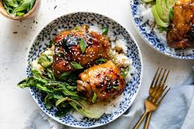

Home
Shoyu Chicken

Description
This Shoyu Chicken recipe is a Hawaiian-inspired dish built around chicken thighs slowly simmered in a mix of spices like paprika, cayenne, and black pepper to create a bold, slightly spicy flavor profile. As it cooks, the chicken absorbs the sauce, becoming tender and juicy while the liquid reduces into a deeply flavorful glaze.
What sets this version apart is its balance of sweetness, saltiness, and heat, along with its large-batch, comfort-food feel. It's designed to feed a crowd and pairs especially well with rice to soak up the extra sauce. Like many Shoyu Chicken dishes, it relies on slow simmering to develop its signature umai depth, resulting in hearty, satisfying meal that's both simple to prepare and packed with bold flavor.
Ingredients
- 1 Cup Soy Sauce
- 1 Cup Brown Sugar
- 1 Cup Water
- 1 Onion, Chopped
- 4 Cloves Garlic, Minced
- 1 Tablespoon Grated Fresh Ginger Root
- 1 Tablespoon Ground Black Pepper
- 1 Tablespoon Dreid Oregano
- 1 Teaspoon Crushed Red Pepper Flakes (Optional)
- 1 Teaspoon Grounded Cayenne Pepper
- 1 Teaspoon Ground Paprika (Optional)
- 5 Pounds Skinless Chicken Thighs
Directions
- Whisky soy sauce, brown sugar, water, onion, garlic, ginger, black pepper, oregano, red pepper flakes, cayenne pepper, and paprika together in a large glass or ceramic bowl. Add chicken thighs and toss to coat evenly. Cover the bowl with plastic wrap; marinate chicken in the refrigerator for at least 1 hour.
- Preheat an outdoor grill to medium heat. Lightly oil the grate.
- Grill chicken thighs on the preheated grill until no longer pink in the center and the juices run clear, about 15 minutes per side. An instant-read the thermometer inserted into the center should read at least 165 degrees F (74 degrees C)